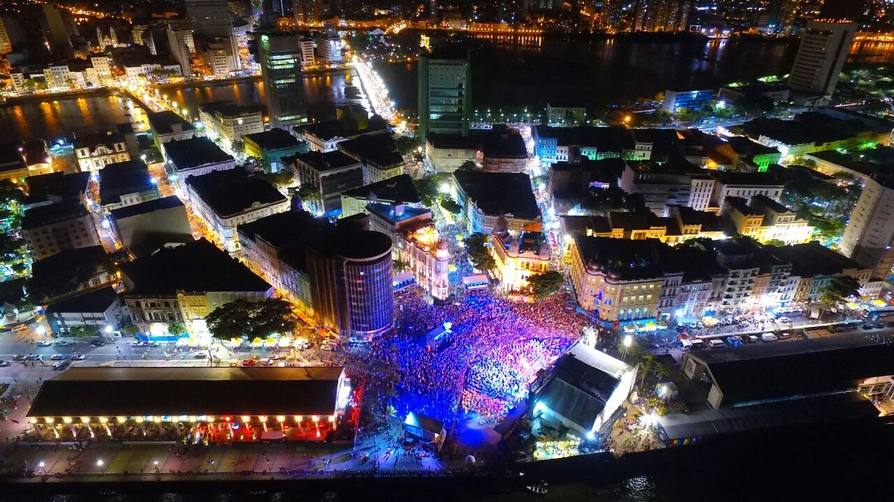
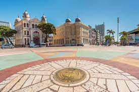
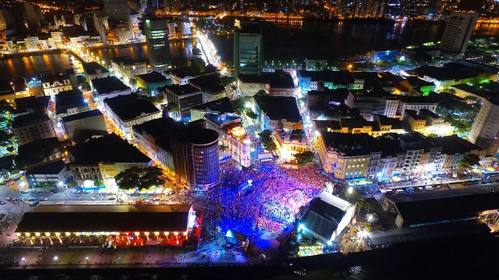
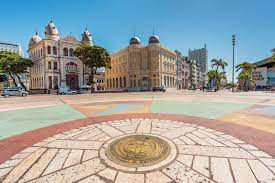

Conheça a história do Marco Zero de Recife
Conhecida pelo seu nome popular – Praça do Marco Zero, na verdade, é um apelido – o local se chama Praça Barão do Rio Branco e está localizada no Bairro do Recife, o Centro Histórico da cidade, que também atende por outra alcunha, mais popular: Recife Antigo. Além de dar o nome oficial à praça, o Barão do Rio Branco também está representado no local por uma estátua em bronze de 2,80m de altura, feita pelo escultor francês Félix Charpentier. O nome de Praça do Marco Zero se popularizou por conta da instalação, em 31 de janeiro de 1938, do Marco Zero de Recife, doado à cidade pelo Automóvel Clube de Pernambuco. A placa redonda posicionada na praça simboliza o centro geográfico de onde partem as medições para todas as estradas de Pernambuco.
Rosa dos Ventos de Cícero Dias
Em 1999, a Praça do Marco Zero passou por uma transformação drástica. A estátua do Barão do Rio Branco e o Marco Zero foram mudados de lugar, um pouco mais para o canto da praça. Com isso, além de ser o centro geográfico de Pernambuco, o Marco Zero passou a ser o centro de uma obra de arte do célebre pintor pernambucano Cícero Dias, um dos mais importantes nomes do modernismo brasileiro: a Rosa dos Ventos. Com 20 metros de diâmetro e formada por pedras de quartzo e granito com pigmentação colorida, a Rosa dos Ventos de Cícero Dias se tornou mais uma das grandes atrações da Praça do Marco Zero.
Parque das Esculturas Francisco Brennand
De frente para a Praça do Marco Zero, sobre um dique natural que protege um estuário do Rio Capibaribe, foi construído em 2000 o Parque das Esculturas Francisco Brennand, que se tornou uma das maiores atrações turísticas da cidade. O parque reúne dezenas de obras do artista plástico Francisco Brennand. A mais imponente delas é a Torre de Cristal, de 32 metros de altura, inspirada em uma flor descoberta pelo paisagista Roberto Burle Marx. Para chegar ao Parque das Esculturas, é preciso fazer uma travessia de barco pelo Rio Capibaribe, com partida e retorno pela Praça do Marco Zero.